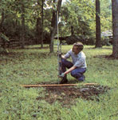
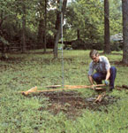
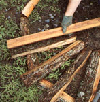
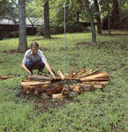
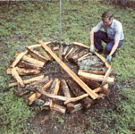
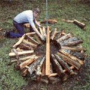
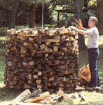
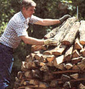
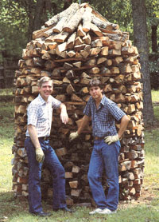
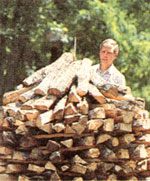

Easy to erect, space efficient, and a joy to behold. Is this the ultimate woodpile?
"Every man," wrote Thoreau, "looks at his woodpile with a kind of affection." Well, maybe so, but some woodpiles merit more fondness than others. There are those that are piles of logs dumped on the ground like pick-up sticks, and then there are those that approach the level of art.
Witness the holzhaufen, a traditional German firewood-curing stack. Able to hold as much as two and a half cords in a six-foot-diameter space, the conelike structure is a marriage of form and function-a marvel to look at and a model of efficient design. And though the structure looks elaborate, building one generally takes only a little more time than making a conventional stack. North Carolinian Don Jennings and his son, featured in the photos, finished the nine-foot-tall, twocord holzhaufen you see here in about two hours.
There are several essentials for a holzhaufen: split wood 12 to 24 inches long (the pieces needn't be precisely the same length, but uniformity helps) . . . a supply of smaller, kindling-size splits . . . and a sunny, level site. If the ground isn't level, the pile could tip, so choose your spot carefully. You'll need from four to six feet of circular space; the shorter the wood, the smaller you should make the holzhaufen's diameter (Don's is six feet across). You'll also need a straight pole (Mr. Jennings uses a sectional aluminum tent pole) the same height or higher than the pile you intend to build-a ten-foot stack, which can contain from two to two and a half cords, is considered maximum, while four feet is as low as you should go. (Remember, though, that this is a curing stack; if you want your dried wood to be easily accessible, and don't want to restack it, don't build a holzhaufen that's higher than you can reach.) Last, get a lightweight board, cut it as long as the pile's intended diameter, and drill a hole in its center just big enough to slide the pole through.
You're ready to start. Place the board on the ground, with the hole at the site's center, and stick the pole through it and firmly into the earth. The pole must be plumb to keep the pile vertical, so check it with a carpenter's level. Now slide the board up the pole and, using the ends of the board to indicate what will be the pile's circumference, lay a circle of end-to-end log splits just inside that circumference.
Once the holzhaufen's foundation is in place, lay the first course of logs. Again, slide the board up the pole and use it as a guide; as you position each log, make sure its outer end is precisely even with a board end, to maintain the pile's diameter. It's important, too, to resist the tendency to lay the logs parallel to one another; although they should be placed as close together as possible, they must extend radially from the center outward, like the spokes of a wheel.
When the first course is complete, it should have a slight inward pitch all around, with the inner ends of the logs about two inches lower than the outer. The course should also be approximately level around the outer few inches of the logs. Move the foundation logs in or out as necessary to achieve a consistent pitch and height. Check the ends of the radial logs once more with the board to be sure the diameter is still the way you want it. As you move the slat on its axis to check each log, use it to help you eyeball the course's perimeter. At any given point, the board should look reasonably level from tip to tip-from the outer edge of one side to the outer edge of the opposite side.
Next, lay a supporting circle of kindling splits across the radial logs a few inches in from the outer ends. The purpose of these stringers is to help maintain the logs' inward pitch and level perimeter, and to bridge any unavoidable gaps in the first course.
Now lay the second and subsequent courses just as you did the first, placing a round of stringers on top of each course. Check every log with the guide board to be sure the radial configuration, desired diameter, and level perimeter are maintained. Too much or too little inward slope will cause problems, too.
When the pile gets to be two or three feet high, fill the hollow core with logs placed on end. Pack them tightly, but not so snug that they put pressure on the outer wall. Now continue building the pile, filling the core whenever it's convenient.
When you get within two or three feet of the holzhaufen's intended top, stop using splits between the courses and stack each circle of logs just a bit closer to the pole than the one before. This will reduce the pile's circumference and gradually reverse the logs' pitch until they meet and rise upward in the middle, creating a cone-shaped top. "Shingle" the roof with logs placed bark side up to shed rain and snow, and there you have it: a genuine holzhaufen!
Now's the time of year when most woodpiles are at their biggest and best. How does yours stack up against the rest? You're invited to find out by entering MOM's first-ever Great Woodpile Contest. Just send us one or more good, sharp photos (35 mm color only) of your cordwood cache, along with a note including your name, address, and phone number. Tell us about your woodpile, too-its size, construction, etc.
We'll award cash prizes to the top three entries-$100 for first place, $50 for second, and $25 for third.
There are only a few qualifying rules: The woodpile must be currently standing, and you must have built it on your own homeplace. Entries must be postmarked before December 31, 1986. (Sorry, we can't return entries.) Decision of the judges is final.
Send entries to Great Woodpile Contest, Mother Earth News, P.O. Box 70, Hendersonville, NC 28793.
|
 Set and level the pole. |
 Lay the foundation |
 Align each log. |
|
 Complete the circle |
 Place the stringers |
 Add more courses |
|
 Keep building |
 ""Shingle"" the roof |
 The finished holzhaufen: a work of art! |
|
 |
|
|